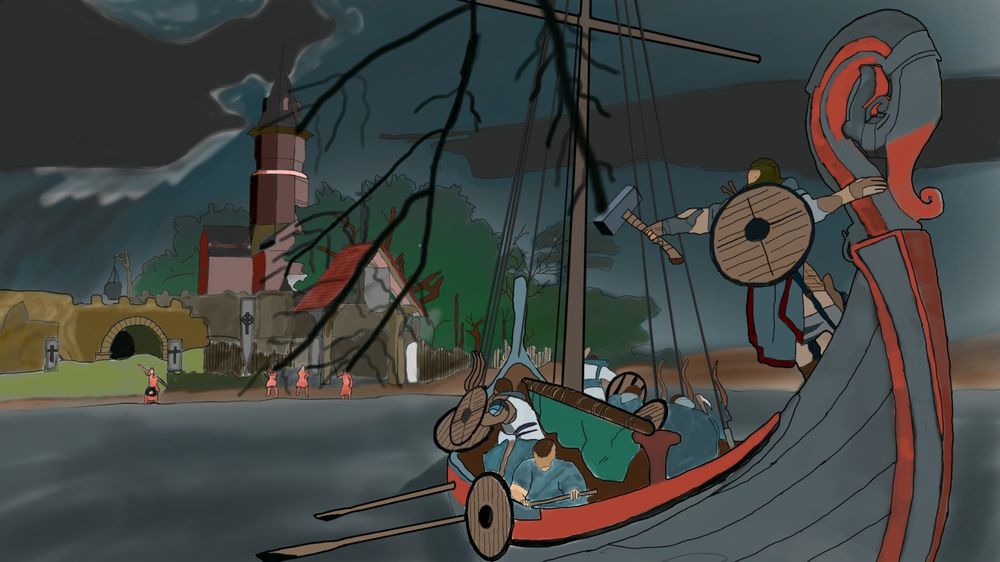
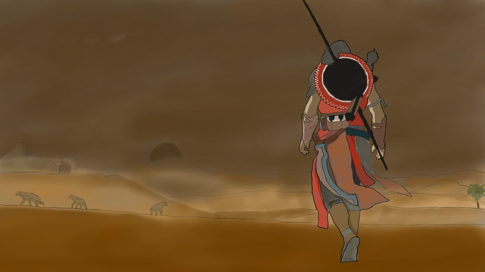

A parte de tener ambiciones como jugador profesional, otro de mis grandes sueños seria conseguir ser un programadar en una gran firma de videojuegos, como Naughty Dog o Riot Games.
Tambien he hecho multiples trabajos para las asignaturas de la universidad, como un edificio entero creado en blender, multiples fanarts de videojuegos y programado juegos sencillos, como un sudoku en python.
Aqui adjunto algunos de mis trabajos y dibujos para tener contexto de lo que he hecho.




Por ultimo puedo añadir que dispongo del titulo de C1 en Ingles, y hablo de forma nativa el Castellano y el Valenciano.
Ademas dispongo de un titulo de mecanografia, y tengo buena carisma y don de gentes.